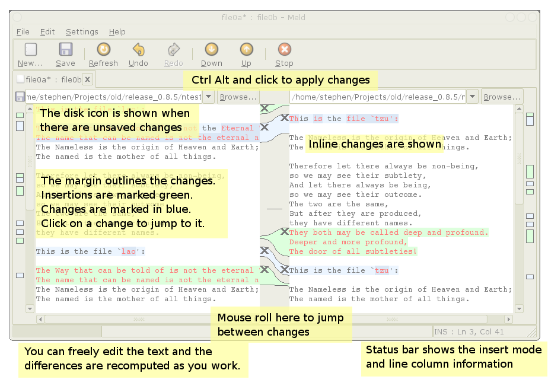
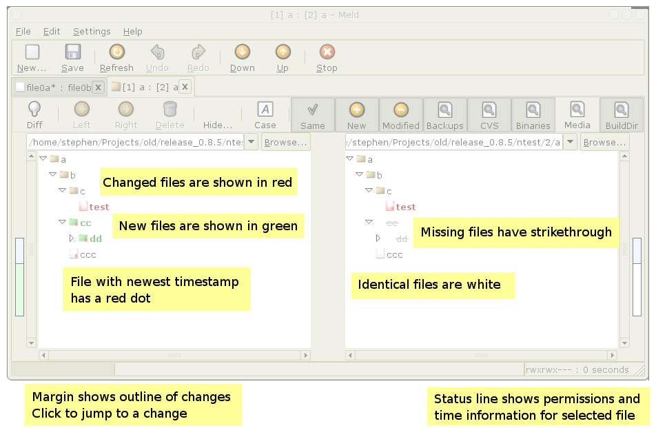

meldmeld <file> <file> [file]meld <dir> <dir1> [dir] meld <dir>
Using File...->New...->Two way file, open up two files, original and modified.
The location of the changes is summarised in the left and right margins.
More detailed differences are shown in the text and central pane.
You can scroll through the changes using the scrollbar, keyboard or mouse wheel in the text pane. The quickest way to browse however is by using the mouse wheel over the central bar to skip between changed sections.
You can apply changes by clicking the merge buttons ("->" and "<-"). Holding control allows blocks to be deleted. Holding Shift allows the current change to be inserted before or after the other change. For more detailed changes simply edit the text inplace and the diffs automatically update.
Save a file by clicking in it and pressing Control+s or by selecting file->save>save file. The save button on the toolbar saves the file which has focus.
Control+W to close current tab and control+Q to quit the app.
Informational messages about what meld is doing appear in the status bar in the bottom of the window. Error messages will trigger a popup dialog.

Using File...->New...->Two way file, open up two directories, original and modified.
Files and folders which are present in one location only appear in green bold typeface. The corresponding
missing file from the other location is drawn in gray with a strikethrough. If files are
present in both locations but differ, they appear in red. Identical files appear in normal black typeface.
Right clicking brings up a context menu which allows you to
You can select several files at once. Hold Shift to select a range. Hold Ctrl to select individual files.
Double clicking an item or selecting it and pressing Enter is a shortcut to launching the file comparison.
Click the cvs button to open up a new CVS browser tab. By default only files under CVS control are shown. To see all files click the 'Unknown' filter button. You can also show only locally modified files by clicking the 'Modified' filter button. If you have several changes scattered in several directories, the 'Recurse' tooggle is flattens the directory listing.
Clicking on an unmodified file opens it in the file viewer. Clicking a modified file opens up a two way diff to examine your changes.
You can examine many changes at once by clicking on a one or more directories and/or files and clicking the diff button.
Some preferences are not hooked up to the gui and are only available by accessing gconf directly (gconf-editor:/apps/meld). See meldapp.py:MeldPreferences for a list of the preferences available.
Directory comparison filters can be changed in this way. The key is filter_pattern_[0-5] and the format is "<label> <enabled by default> <shell patterns>"